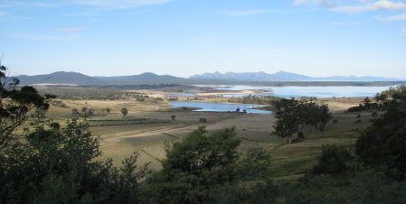
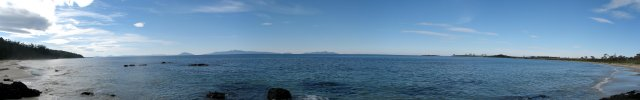
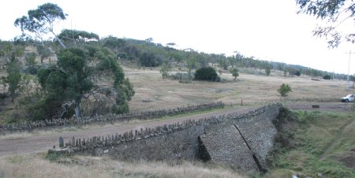
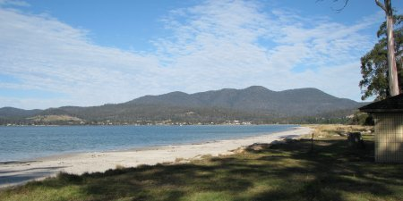
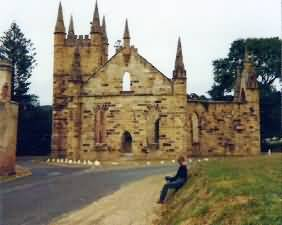
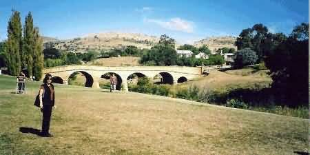

NAVIGATION
TOP of Page
MAIN Page
HOME Page
PREV Page
NEXT Page
ON THIS PAGE
St Helens to Lagoons
Lagoons to Eaglehawk
Eaglehawk to Richmnd
TASMANIAN TOUR
North West
Central North
North East
East Coast
South East
South West
Highlands
West Coast
North Coast
|
From St Helens to The Chain of Lagoons
St Helens, population 800, is a fishing port with an annual crayfish catch of 200 tonnes,
and is the largest town on the East Coast. This resort has 50km of shoreline for water sport.
Wildflowers and orchids can be found in the hinterland. Mount William National Park was
established to protect the rare 2m tall Eastern Grey (Forester) kangaroo. Head south on the A3
Tasman Highway for 18.4km into Scamander. Scamander, population 200, on the Scamander
River estuary has the best beaches along the coast for water sports like surfing. The river is
renowned for bream fishing. Head South on the A3 Tasman Highway for 7.7km. Continue onto the A4
Esk Highway (signs for St Marys/Hobart) for 9.7km into St Marys.
TOP
MAIN
HOME
PREV
NEXT
St Marys, population 700, is a colliery and timber town with the now closed railway
terminus for the Conara - Fingal branch line. Head west on the A4 Esk Highway for 19.6km into
Fingal. Fingal, population 750, is the largest colliery town in the state, with the
Duncan mine producing 280,000 tonnes annually. The local hotel was originally a convict barracks
with stone walls 80cm thick. The town has views to Ben Lomond, 30km away. Head west on
the A4 Esk Highway towards Bagot Street for 550m. Turn right onto the B43 Mathinna Road (signs
for B43/Mangana) and head Northwest for 1.7km. Turn right to head North on the B43 Mathinna Road
for 17.5km. Turn right onto Evercreech Road for 7.9km North into the Evercreech Forest Reserve.
Evercreech Forest Reserve, with its 300 year old trees, has the tallest white gums
in the world. Head East on Evercreech Road towards Barnes Road for 7.9km. Turn right onto
the B43 Mathinna Road for 6.4km into Mathinna. Mathinna, is 27km North of Fingal and is
named after an aboriginal girl befriended by Governor Franklin. The nearby waterfall has a four
tier cascade through Myrtle forest. Return to St Marys.
Head East then South on the B43 Mathinna
Road for 23.9km. Continue straight onto the B42 Mangana Road and head Northwest for 7.9km into
Mangana. Mangana, aboriginal for South Esk river, features views to Legges Tor in Ben
Lomond National Park. The Catholic church in this old gold mining town has a Swiss style tower.
Head south-west on the B42 Rossarden Road for 15.5km. Turn left to stay on B42 Rossarden Road
for 3.2km into Rossarden.
Rossarden, at the foot of Stacks Bluff (1,527m), is a run down village on a Wolfram
mine that closed in 1982. The local scenery is spectacular, with the road along the base of
Mt Ben Lomond. Head Southwest on the B42 Rossarden Road towards Baker Street for 18.7km.
Turn left onto the A4 Esk Highway (signs for Fingal/St Marys/St Helens/A3) into Avoca.
Avoca, population 200, on the South Esk river, contains Bona Vista (1848), a fortress
like homestead built around a courtyard. St Thomas church (1842) is of freestone construction.
Head Southwest on the A4 Esk Highway towards St Pauls Place for 24.5km. Turn right onto the
Midland Highway / National Highway 1 for 1.2km into Conara. Conara Junction features an
unusual turning triangle with two stations, one mainline and one branchline. Return to St Marys.
Take the A4 Esk Highway (signs for Avoca/Fingal/ Saint Marys) for 72.4km into St Marys. Take
the A4 Elephant Pass Road for 7.4km to descend the Elephant Pass into Chain of Lagoons on the
East Coast.

Moulting Lagoon Reserve to protect nesting seabirds
TOP
MAIN
HOME
PREV
NEXT
From The Chain of Lagoons to Eaglehawk Neck
Chain of Lagoons is a protected breeding ground for the local birds. Turn right onto
the A3 Tasman Highway (signs for Bicheno/Sorell/Hobart) for 27.6km. Turn left onto Foster
Street for 72m into Bicheno. Bicheno, population 500, is a fishing port and resort on
the Denison river. Once Tasmania's oldest whaling station, with its small harbour 'The Gulch'
once hosting colliers in the 1850's. The Birdlife Park is 5km north of town and the
seemingly rundown Sealife Park contains a variety of interesting displays.
Along the coast are the intricately carved sandstone cliffs called The Porches, and
an 80 tonne granite boulder rocked by the sea near the Blowhole. Head South on the A3
Tasman Highway for 11.3km. Turn left onto Coles Bay Road (signs for C302) for 26.3km on a
dirt road into Coles Bay, a fishing and holiday resort on the Freycinet Peninsula.

A Panoramic view of the Freycinet Peninsula and Islands
Freycinet Peninsula National Park is one of the most photogenic areas of Tasmania.
The Peninsula and the associated islands stretch 30km down the coast to provide a
peaceful refuge for holidays makers within 3 hours travel of Hobart. The Hazards are
three red granite cliffs that rise from the sea. Head Northwest on Coles Bay Road towards
Reserve Road for 26.3km. Turn left onto the A3 Tasman Highway (signs for Swansea/Sorell/Hobart)
for 31.8km into Swansea.
Swansea, population 400, at the head of Great Oyster Bay, began in 1827 as a military
post. On the south side of town is the Swansea Bark Mill, with its processing machine for
Black Wattle bark used in the tanning of leather. Spiky Bridge (1843), built by convicts
from local field stone without mortar. The stone spikes are intended to prevent cattle falling
off the bridge. Head South on the A3 Tasman Highway for 48.9km into Triabunna.

Spiky Bridge just South of Swansea
Triabunna, population 850, once a whaling station, is now a fishing village with a woodchip
mill taking timber from surrounding forest. Head South on the A3 Tasman Highway for 7.7km into Orford.
Orford, population 350, a resort on Prosser Bay is entered via Paradise Gorge. Ferry
trips go to Darlington on Maria Island, a convict colony from 1825 to 1850, with its fossil
bearing cliffs. Head Southwest on the A3 Tasman Highway for 16.2km into Buckland.
Buckland, population 200, has St John the Baptist Church (1846) with a window
originally designed for William the Conquerer's Battle Abbey. The window was hidden during
the English Civil War, when churches were raized by Oliver Cromwell. Head Southwest on the A3
Tasman Highway for 35.6km to Sorell.

Orford and Maria Island on the Freycinet Peninsula
Sorell, population 2,300, is an agricultural centre that was responsible for feeding
Sydney town. The 3.3 km Causeway (1872) took eight years to build. Turn down the A9 Arthur
Highway for 30.9km into Dunalley. Dunalley, population 250, is the point where Europeans
first set foot in Australia. The Tasman Monument indicates where bel Tasman planted the Dutch
flag in Blackman Bay on 3rd December 1642. Head Southeast on the A9 Arthur Highway for 19.9km
into Eaglehawk Neck.
TOP
MAIN
HOME
PREV
NEXT
From Eaglehawk Neck to Richmond
Eaglehawk Neck, is the 100m wide gateway to the Tasman Peninsula. In convict times,
savage dogs were strung across the path to deter escape; Martin Cash avoided this by swimming
around the headland in shark infested seas. The Tessellated Pavement has a surface fractured
by compression forces. Local rock formations include the Blowhole, spectacular
Tasmans Arch and Devils Kitchen. Walk 15km to Cape Pillar, with 150m waterfalls
dropping down a sea cliff face.
Doo Town has the houses all named Doo something-or- other. Head south-west on the A9
Arthur Highway towards Ferntree Road for 9.2 km into Taranna. Taranna has the
Tasmanian Devil Park while the now closed Bush Mill near Oakwood was a
recreation of a previous century timber mill. Narrow gauge steam locomotives, including a
copy of the original Northeast Dundas Tramway K-1 Garrett, featured on the 4km railway.
Head south on the A9 Arthur Highway towards Balts Road for 9.2km into Port Arthur.

The Church at Port Arthur
Port Arthur played host to 12,500 blue and white clothed convicts between 1830 and 1877,
with a peak of 7,000. Most stayed for seven or fourteen years, with exceptional sentences of
life. From 1830 more free settlers arrived than convicts. The last convicts arrived in 1853,
and the settlement closed in 1877 due to an aging population. The gothic Church (1836)
used by several denominations was not consecrated due to a murder during the laying of the
foundations. The Penitentary (1842) is the largest building, housing 480 prisoners,
with a solitary confinement centre called the Model Prison at the rear. The Asylum
(1864) is now the vistors centre. The Isle of the Dead, just off the end of the
harbour, is the cemetery for 1,769 convicts and 180 free persons.
Head North on the A9 Arthur Highway towards Kruvale Road for 37.5km. Turn right to stay on the
A9 Arthur Highway for 31.7km. Continue onto the A3 Cole Street for 2.8km. Turn left onto
the C351 Brinktop Road (signs for Richmond) for 9.9km. Slight left towards Bridge Street for
150m. Slight right onto Bridge Streetfor 170m into Richmond.
Richmond, population 450, has Richmond Bridge (1825) and St Johns Catholic
Church (1837), both Australias oldest. St Lukes (1836) is known for its complex
ceiling. The Richmond Arms Hotel has iron lace along the verandahs, and the Court
House (1820) still serves its original function. Many other historic Georgean buildings
now serve as tourist spots. Head to Hobart via Cambridge, where Mt Rumney has
views to Hobart and the Tasman Peninsula.

Historic Richmond Bridge
Head Southwest on the B31 Bridge Street towards Percy Street for 15.5km. Turn left onto
the C329 Cambridge Road for 160m. Merge onto the A3 Tasman Highway via the ramp on the right
to Hobart for 6.4km. Slight left to stay on The A3 for 3.0km. Slight right onto the A3
Liverpool Street through one roundabout for 850m. Turn right onto Elizabeth Street for 250m.
Turn left at the second cross street onto Melville Street for 180m. Take the first left on
to Murray Street for 94m into Hobart.
TOP
MAIN
HOME
PREV
NEXT
|